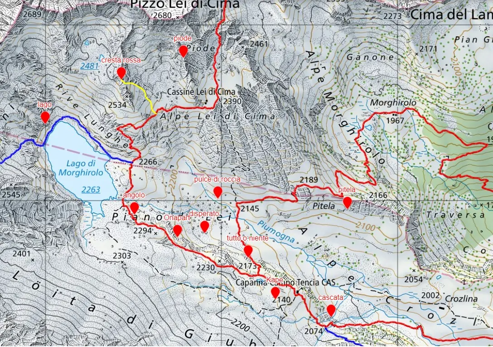

Escalade
Des jardins d’escalade à quelques minutes de la cabane, du III au 6b : idéal pour apprendre.
Une zone idéale pour apprendre l’escalade aux enfants et aux débutants : autour de la cabane, plusieurs secteurs ont été équipés, du III jusqu’à quelques longueurs en 6b pour les plus exigeants.
Le secteur Angolo, près du lac, est équipé spécialement pour l’entraînement sur rocher : voies d’une longueur, relais de rappel, rappels en fil d’araignée et une courte voie facile de plusieurs longueurs pour s’exercer. À quelques minutes de la cabane, dans le secteur Cascata, on peut s’exercer aux manœuvres de corde sur des voies faciles et parallèles de plusieurs longueurs, et le bloc Kape offre quelques voies d’une longueur.
Dépliant des jardins d’escalade (en italien)
| Secteur | Voies | Longueur | Cotation | Remarques |
|---|---|---|---|---|
| Cascata | 4 | 60 m | 3-4 | plusieurs longueurs, parallèles |
| Kape | 7 | 10 m | 5-6c | une longueur |
| Tutto o niente | 10 | 20 m | 3-5a | une longueur |
| Disperato | 6 | 10 m | 4-5a | |
| Onapart | 3 | 30 m | 5a-6b | |
| Pulce di roccia | 5 | 20 m | 3-4 | dalles faciles |
| Angolo | 8 | 20 m | 4-5a | zone d’entraînement |
| Piode | 3 | 25 m | 4-5a | |
| Pitela | 6 | 10-80 m | 3-5a | |
| Cresta rossa | 500 m | 2-4 | voie alpine | |
| Lago | 1 | 75 m | 5a |
